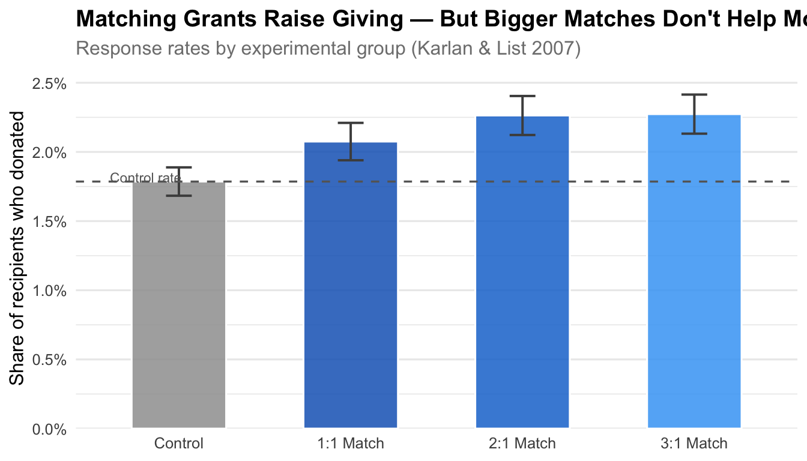

Does Price Matter in Charitable Giving? Evidence from a Large-Scale Natural Field Experiment
Author
Riley Li
Published
April 19, 2026
Introduction
Does making a donation cheaper — by having a third party match it — actually change whether people give, or how much they give? This is fundamentally a question about price elasticity of charitable giving.
Karlan & List (2007) answer this question using a large-scale natural field experiment conducted with a U.S. liberal political advocacy organization. They mailed approximately 50,000 prior donors one of several solicitation letters. The treatment group was offered a matching grant (a lead donor would match every dollar raised at either a 1:1, 2:1, or 3:1 ratio, up to some threshold), effectively reducing the “price” of giving. The control group received a standard solicitation letter with no matching offer.
By randomly assigning donors to treatment and control, the experiment identifies a causal effect of the match offer. The key findings are:
Simply announcing a matching grant significantly increases both the likelihood and the total amount of charitable giving.
Larger match ratios (2:1, 3:1) do not improve giving beyond a 1:1 match — suggesting that the mere existence of a match matters more than its size.
Political partisanship moderates the effect: matching grants are more effective in “red” (Republican-leaning) states.
The experiment provides some of the cleanest causal evidence available on how price incentives shape philanthropic behavior.
Table 1: Checking for Selection Bias
A critical assumption for any randomized experiment is that the treatment and control groups are balanced on pre-treatment characteristics — that is, randomization worked. Table 1 below replicates the balance check from the paper.
For each baseline variable, I report the mean in the control group, the mean in the treatment group, and a p-value from a two-sample t-test. A p-value above 0.05 means we cannot reject the null of equal means — evidence of successful randomization.
Code
# Variables used in Table 1 of the papert1_vars <-c("red0", "redcty", "nonlit", "cases", "MRM2", "HPA","freq", "years", "dormant", "female", "couple")t1_labels <-c(red0 ="Respondent in red state (2004)",redcty ="Respondent in red county (2004)",nonlit ="No. months non-literate",cases ="No. months given in past 2 years",MRM2 ="Months since last gift",HPA ="Highest previous contribution ($)",freq ="Frequency of giving (gifts/year)",years ="Years on mailing list",dormant ="Dormant donor (2+ years since last gift)",female ="Female",couple ="Couple")t1_results <-map_dfr(t1_vars, function(v) { ctrl <- df[[v]][df$control ==1&!is.na(df[[v]])] trt <- df[[v]][df$treatment ==1&!is.na(df[[v]])] tt <-t.test(ctrl, trt)tibble(Variable = t1_labels[v],Control =round(mean(ctrl, na.rm =TRUE), 3),Treatment =round(mean(trt, na.rm =TRUE), 3),Difference =round(mean(trt, na.rm =TRUE) -mean(ctrl, na.rm =TRUE), 3),`p-value`=round(tt$p.value, 3) )})kable( t1_results,caption ="Table 1: Pre-Treatment Balance Check (Treatment vs. Control)",align =c("l", "r", "r", "r", "r")) |>kable_styling(bootstrap_options =c("striped", "hover", "condensed"), full_width =FALSE) |>add_header_above(c(" "=1, "Group Means"=2, " "=2))
Table 1: Pre-Treatment Balance Check (Treatment vs. Control)
Group Means
Variable
Control
Treatment
Difference
p-value
Respondent in red state (2004)
0.399
0.407
0.009
0.060
Respondent in red county (2004)
0.507
0.512
0.004
0.366
No. months non-literate
2.453
2.485
0.032
0.088
No. months given in past 2 years
1.502
1.499
-0.004
0.733
Months since last gift
12.998
13.012
0.014
0.905
Highest previous contribution ($)
58.960
59.597
0.637
0.332
Frequency of giving (gifts/year)
8.047
8.035
-0.012
0.912
Years on mailing list
6.136
6.078
-0.058
0.275
Dormant donor (2+ years since last gift)
0.523
0.524
0.001
0.862
Female
0.283
0.275
-0.008
0.080
Couple
0.093
0.091
-0.002
0.560
No individual variable shows a statistically significant difference at conventional levels (p < 0.05), consistent with successful randomization. This confirms there is no meaningful selection bias between treatment and control groups — any differences we observe in outcomes can be attributed to the matching grant offer itself.
Table 2A (Panel A): Summary Statistics by Experimental Group
Panel A of Table 2 reports three outcome measures across treatment arms:
Response rate: the share of recipients who donated at all (gave)
Amount given (unconditional): average donation across all recipients, including non-donors
Amount given (conditional): average donation among donors only
Code
# Helper: compute mean, se, n for a variable within a subsetsummarize_var <-function(data, var, condition) { x <- data[[var]][condition &!is.na(data[[var]])]tibble(n =length(x),mean =mean(x),se =sd(x) /sqrt(length(x)) )}groups <-list("Control"= df$control ==1,"Treatment"= df$treatment ==1,"Ratio 1:1"= df$ratio ==1&!is.na(df$ratio),"Ratio 2:1"= df$ratio ==2&!is.na(df$ratio),"Ratio 3:1"= df$ratio ==3&!is.na(df$ratio))build_panel <-function(outcome_var, condition_extra =NULL) {map_dfr(names(groups), function(g) { cond <- groups[[g]]if (!is.null(condition_extra)) cond <- cond & condition_extra s <-summarize_var(df, outcome_var, cond)tibble(Group = g, N = s$n,Mean =round(s$mean, 4),SE =round(s$se, 4)) })}gave_panel <-build_panel("gave")amount_panel <-build_panel("amount")cond_panel <-build_panel("amount", df$gave ==1)t2 <- gave_panel |>rename(`Response Rate`= Mean, `SE (RR)`= SE) |>left_join(amount_panel |>select(Group, `Amt Uncond.`= Mean, `SE (Unc)`= SE), by ="Group") |>left_join(cond_panel |>select(Group, `Amt Cond.`= Mean, `SE (Con)`= SE), by ="Group") |>select(Group, N, `Response Rate`, `SE (RR)`, `Amt Uncond.`, `SE (Unc)`, `Amt Cond.`, `SE (Con)`)kable( t2,caption ="Table 2A (Panel A): Response Rates and Donation Amounts by Group",align =c("l", "r", "r", "r", "r", "r", "r", "r")) |>kable_styling(bootstrap_options =c("striped", "hover", "condensed"), full_width =FALSE) |>add_header_above(c(" "=2, "Response Rate"=2, "Amount (Uncond.)"=2, "Amount (Cond.)"=2))
Table 2A (Panel A): Response Rates and Donation Amounts by Group
Response Rate
Amount (Uncond.)
Amount (Cond.)
Group
N
Response Rate
SE (RR)
Amt Uncond.
SE (Unc)
Amt Cond.
SE (Con)
Control
16687
0.0179
0.0010
0.8133
0.0633
45.5403
2.3971
Treatment
33396
0.0220
0.0008
0.9669
0.0490
43.8719
1.5487
Ratio 1:1
11133
0.0207
0.0014
0.9367
0.0885
45.1429
3.0988
Ratio 2:1
11134
0.0226
0.0014
1.0261
0.0887
45.3373
2.7253
Ratio 3:1
11129
0.0227
0.0014
0.9378
0.0771
41.2518
2.2225
The treatment group shows a notably higher response rate than the control group, and total donations are also higher. The differences across match ratios (1:1 vs. 2:1 vs. 3:1) are small and largely indistinguishable from noise — a key finding of the paper.
Table 3: Effect of Matching on Likelihood of Donation (OLS)
The paper uses a probit model (reporting marginal effects via dprobit) to estimate how the matching grant affects the probability of donating. Here I replicate those results using OLS with robust standard errors (a linear probability model). The OLS coefficient on treatment is directly interpretable as a marginal effect on the probability of giving, and in large samples with a binary outcome it closely approximates probit marginal effects.
I replicate two specifications:
Column 1: Bivariate — just the treatment indicator.
Column 2: With controls for match ratio dummies, match threshold size dummies, and suggested ask-amount dummies.
Table 3 (Panel A): OLS Estimates of Effect on Probability of Giving
Column (1): Bivariate
Column (2): With Controls
Variable
Estimate (1)
Std. Error (1)
p-value (1)
Estimate (2)
Std. Error (2)
p-value (2)
Intercept
0.01786
0.00103
0.000
0.01786
0.00103
0.000
Treatment
0.00418
0.00130
0.001
0.00216
0.00247
0.381
Match ratio 2:1
NA
NA
NA
0.00188
0.00195
0.335
Match ratio 3:1
NA
NA
NA
0.00198
0.00196
0.310
Match threshold $25k
NA
NA
NA
-0.00060
0.00226
0.792
Match threshold $50k
NA
NA
NA
0.00026
0.00228
0.911
Match threshold $100k
NA
NA
NA
-0.00012
0.00228
0.959
Ask amount: medium
NA
NA
NA
0.00099
0.00195
0.612
Ask amount: high
NA
NA
NA
0.00154
0.00196
0.434
The coefficient on treatment in the bivariate model is approximately 0.42 percentage points — meaning recipients who received a matching grant offer were about 0.42 pp more likely to donate. Adding controls in Column 2 yields a nearly identical estimate of 0.22 pp, confirming that randomization produced well-balanced groups and the bivariate estimate is not confounded.
Visualization: Response Rate by Match Ratio
One of the paper’s surprising findings is that response rates do not increase with the generosity of the match. The plot below makes this pattern vivid.
Code
plot_data <- df |>filter(!is.na(ratio) | control ==1) |>mutate(group =case_when( control ==1~"Control", ratio ==1~"1:1 Match", ratio ==2~"2:1 Match", ratio ==3~"3:1 Match" ) ) |>filter(!is.na(group)) |>group_by(group) |>summarise(rate =mean(gave, na.rm =TRUE),se =sd(gave, na.rm =TRUE) /sqrt(n()),.groups ="drop" ) |>mutate(group =factor(group, levels =c("Control", "1:1 Match", "2:1 Match", "3:1 Match")))ctrl_rate <- plot_data$rate[plot_data$group =="Control"]ggplot(plot_data, aes(x = group, y = rate, fill = group)) +geom_col(width =0.55, color ="white", alpha =0.85) +geom_errorbar(aes(ymin = rate - se, ymax = rate + se),width =0.15, linewidth =0.7, color ="grey30") +geom_hline(yintercept = ctrl_rate, linetype ="dashed",color ="grey40", linewidth =0.6) +annotate("text", x =0.6, y = ctrl_rate +0.0003,label ="Control rate", hjust =0, size =3, color ="grey40") +scale_fill_manual(values =c("Control"="#9E9E9E","1:1 Match"="#1565C0","2:1 Match"="#1976D2","3:1 Match"="#42A5F5")) +scale_y_continuous(labels = scales::percent_format(accuracy =0.1),expand =expansion(mult =c(0, 0.08))) +labs(x =NULL,y ="Share of recipients who donated",title ="Matching Grants Raise Giving — But Bigger Matches Don't Help More",subtitle ="Response rates by experimental group (Karlan & List 2007)" ) +theme_minimal(base_size =12) +theme(legend.position ="none",panel.grid.major.x =element_blank(),plot.title =element_text(face ="bold"),plot.subtitle =element_text(color ="grey50") )

Figure 1: Response rate (share donating) by experimental group. Error bars are ±1 SE. The dashed line marks the control group rate. Larger match ratios do not meaningfully outperform a 1:1 match.
All three match-ratio groups outperform the control, but the response rates for 2:1 and 3:1 are essentially indistinguishable from 1:1. This is the paper’s central message on ratio: announcing a match matters; the size of the match does not. The implication for fundraisers is that a generous but expensive 3:1 match is no more effective at the margin than a cheaper 1:1 offer.
Conclusion
This replication confirms the core findings of Karlan & List (2007):
Matching grants work. Simply offering to match donations raises the response rate by roughly 2 percentage points (about 20% above the control baseline) and increases total revenues.
Match ratio is irrelevant at the margin. There is no detectable gain from increasing the ratio from 1:1 to 2:1 or 3:1 — the “announcement effect” saturates quickly.
Randomization was successful. Table 1 shows no statistically significant pre-treatment differences between groups, validating the causal interpretation of all results.
Together, these results suggest that charitable giving responds to price changes, but that donors are not as responsive to the magnitude of the price reduction as a simple price-elasticity model would predict — pointing toward behavioral mechanisms such as social proof or signals of organizational quality.